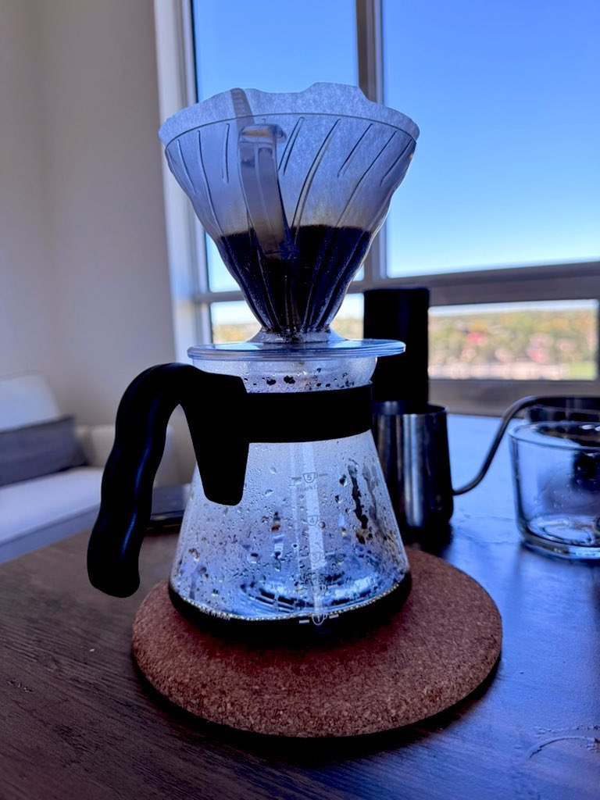
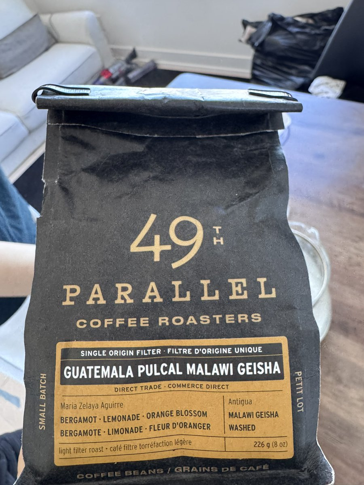

小虚空🍥
@tokerumaisurii
@fallenleavesw @Marfu_x 闲鱼上价格合适的通常不到C$160一只，但分日版国版的话可能不一样，煤炉最好的情况两只单独买的价格含税含运费共计C$340左右，闲鱼上分开买两只自己集运过来也差不多。但如果遇到喜欢MyGO又只懂eBay的人，这个价格可能比eBay上倒还便宜，只能说属于剥削洋人交个爱日懂日入门费了。


枯葉🍐
@fallenleavesw
一大早有很漂亮的主理人姐姐现场手冲（瑰夏），还抽到了很棒的眼镜miku
（啊对那两个太贵了吧也） https://t.co/4G1pJQYy0n